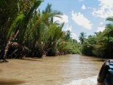
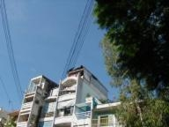

| ９月８日（土） 旅行前日。 一緒に行くＫ島くんと蒲田はベトナム料理屋で予定決め。あと旅行保険に入って、喫茶店で、えー、テクノロジー談義、かな。結論、遊ぶことは人間にしかできない。で、いざベトナム旅行！ |
| ９月９日（日）〜１４日（金）ベトナム旅行 ベトナムの人に喜ばれたこと 観光客と現地の人って立場はあるにしても、やっぱりなにかしらお互いに喜びたいじゃんか。でぇ、まず。ベトナム語をしゃべる。しゃべれないでもベトナム語に興味を示す。キホン。使ったのは、チャオ（挨拶）カムオン（ありがとう）カイナイラーカイジー（これは何？）、、、くらいか。でも大分違うよ。あとアイントットとか。キミいいやつ、って意味か。だけど、向こうのひと、ぜーんぜんベトナム語で返事はしてくれなかったな。なんか、気になる。しかし、ベトナム語はむずかしい。声調が５つあって、発音おしえてもらったけど、ぜーんぜん区別できず。 あと、一緒に行動してたＡちゃんとＮちゃんが、アオザイ来てホテルの辺り散歩したのが、近くの人にエライ好評だったなぁ。おー、アオザイガール！！かなんか言われ。それですっかり顔おぼえてもらって以降、タクシー運ちゃんやらシクロのにぃちゃんやら、滅法愛想よかった。 つまり、文化に興味を示す、と、そーゆーことかと。  America Under Attack やー、テーマいくつかあるけどさ。とりあえず。CNNでずっとあのタイトルだったから。切り口も色々あろうけど、そうそう、いーろんな表情に会ったよ。僕が初めて知ったのはインターネットカフェで、メコンデルタのツアーで一緒だった関西の大学生の「なんかすごい事件おきたみたいですよ」で。おそいダウンロードで現れた貿易ビルや国防省に首筋が粟立ったよ。自分がどういう表情でいたかは、知らない、。ブラウン管向こうのニューヨーク市民の悲しむとか怒るとかいうより驚きに言葉がないって表情とか。対比が面白かったのは、ホテル近くのバーの白人女性と現地従業員男性の表情。女性、オーバーアクションで事件の如何に大事であるかを説くんだけど、男性、対岸の火事といった風で一向にぴんとこない表情。新聞記事のローマ法王が額を押さえて沈鬱の表情。台北のネットカフェで銃撃戦のゲームに興じる若い人たちの表情。あと個人的に一番おぼえてるのは、クチってベトナムゲリラの拠点をめぐるツアーのガイド男性。 隣席で「アメリカのニュースを知ってるか」って話しかけて、知らないという彼に、コレコレこんなコトがあったんだ、ベリーベリービッグニュースだ、と僕は彼に好奇心を期待したんだけど、彼は単にじつに嫌そうに顔をしかめただけだった。これには、恥じ入った、大いに、。なるほど彼は戦争の惨めを知っており、僕は知らない、。  |
| ９月１５日（土）１６日（日） だれる。 風邪気味で帰ってきて、だれてた。あー、一穂くんと弟のグロリア定期公演を聴き行った。喫茶店で一杯アルコール入ってたんで、トロトロだった。 |